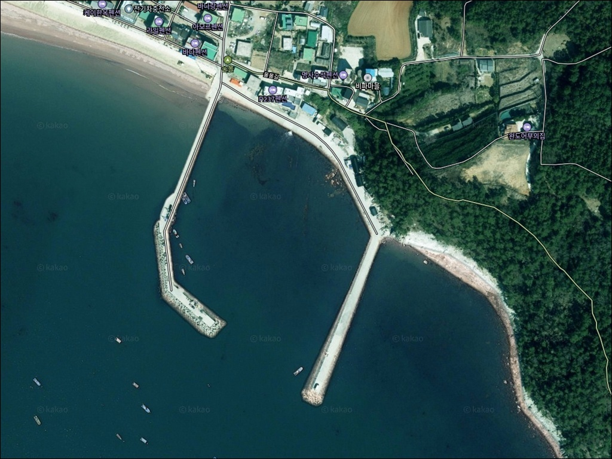
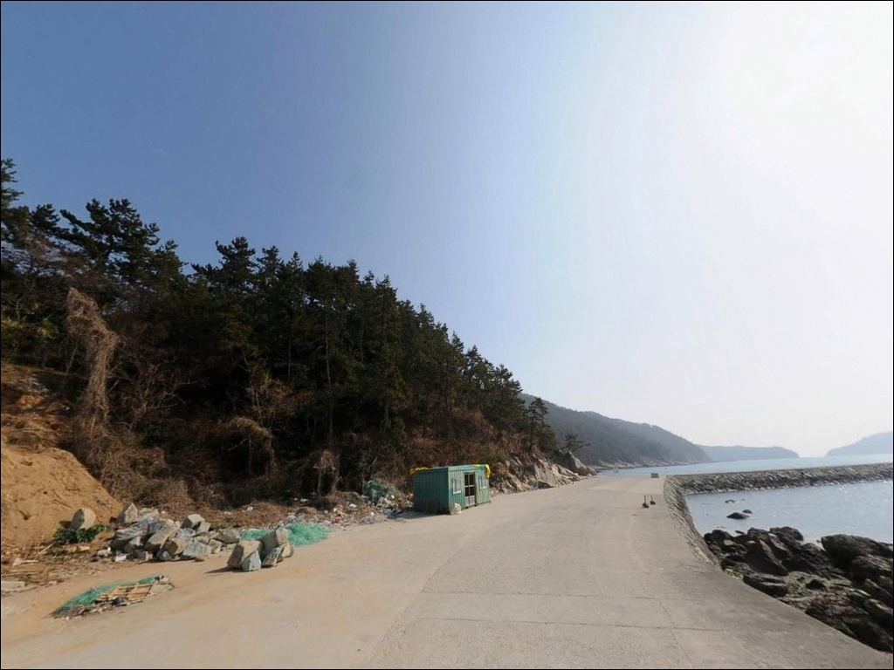
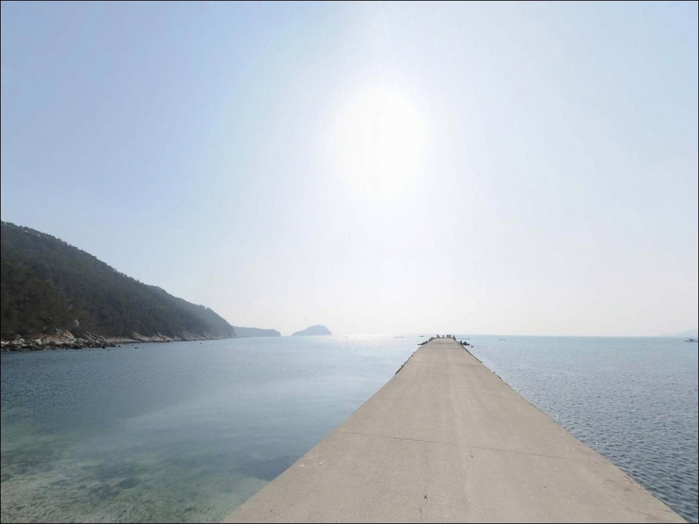
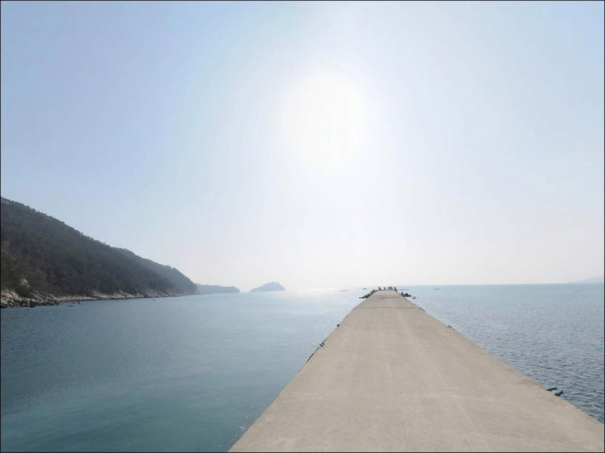
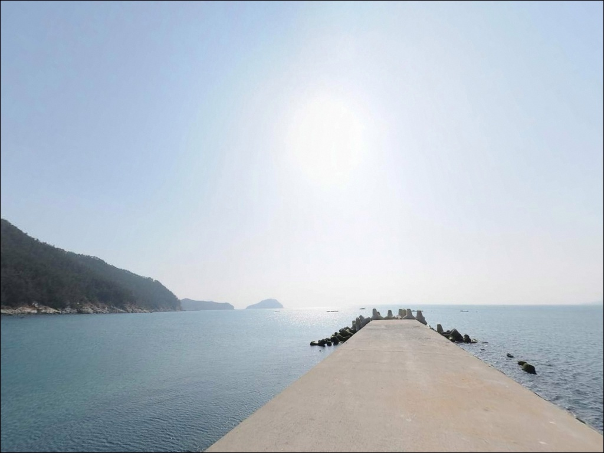
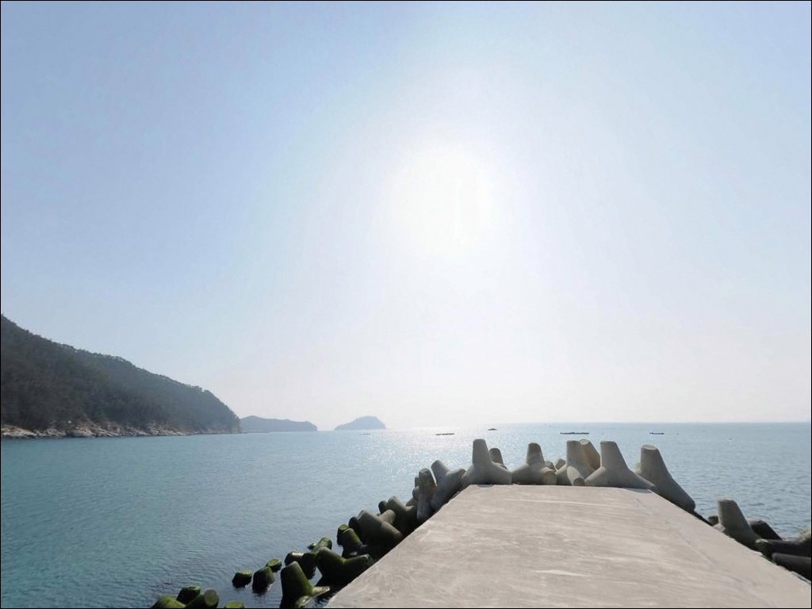
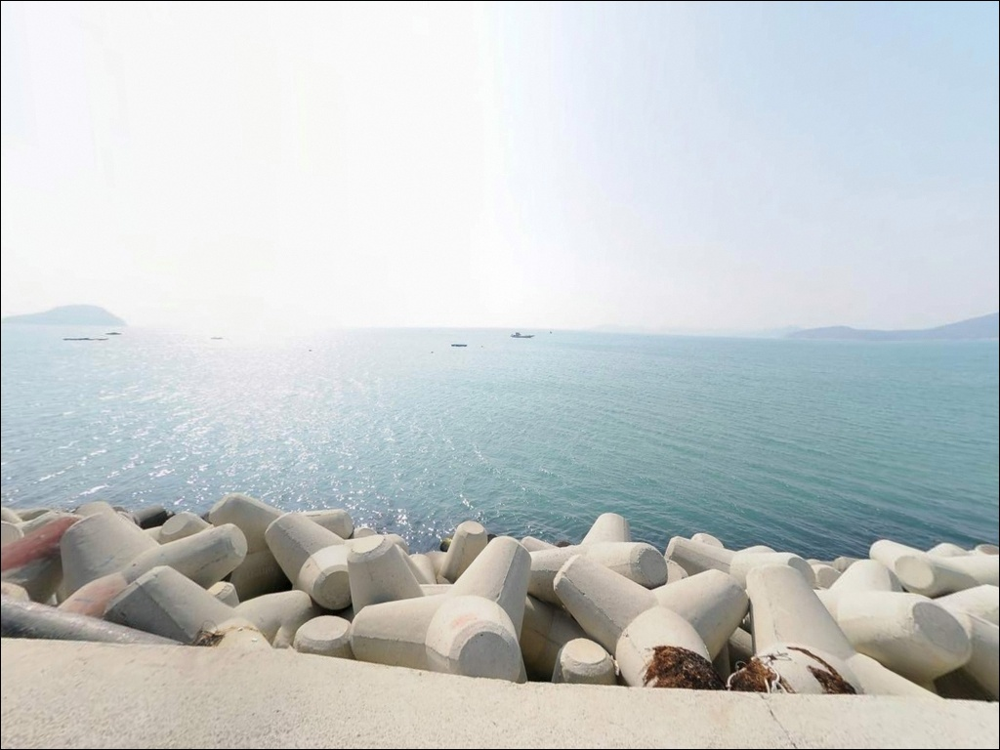
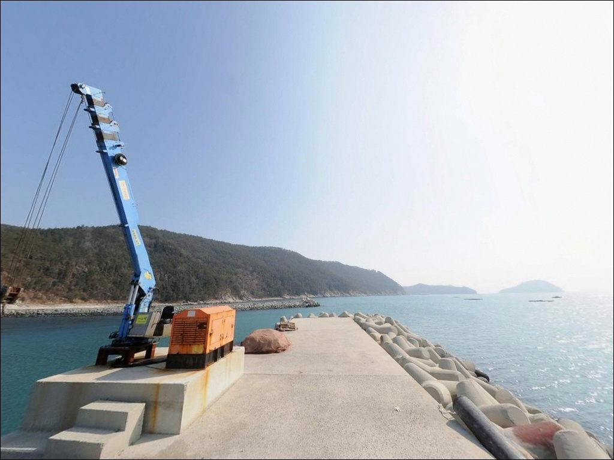
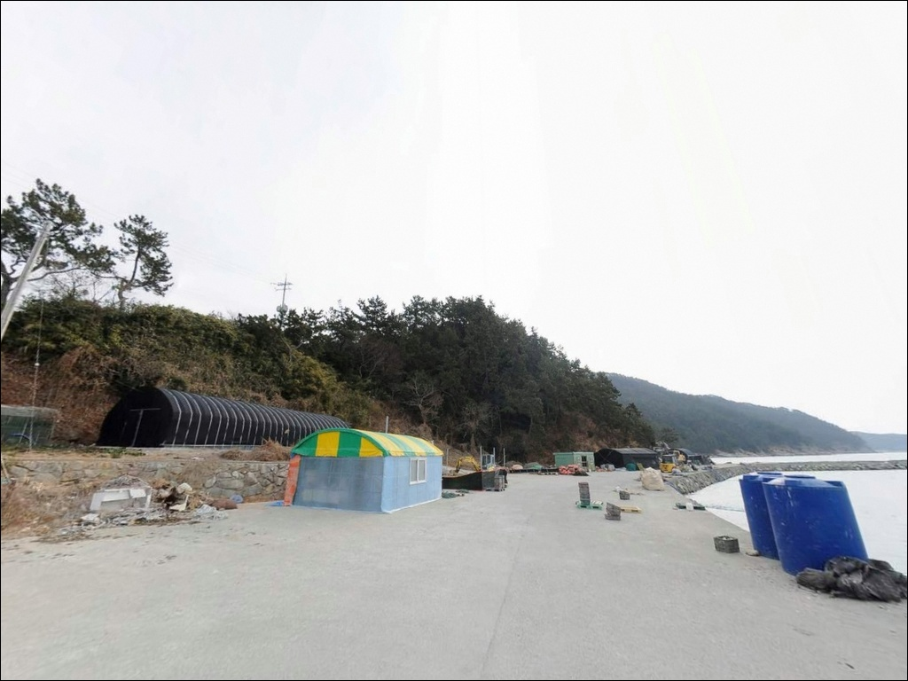

울물방파제, 신지도 전남 완도군 주말 드라이브 겸 들르는 바다 차박 낚시 스팟
이 페이지에는 광고(제휴 링크 포함)가 있으며, 광고 링크를 통해 구매하면 운영자가 판매 수익 또는 수수료를 받을 수 있습니다. 포인트 사진: 카카오맵 스카이뷰·로드뷰. 이 페이지의 지도·사진 이미지는 카카오맵의 실제 서비스 이미지와 다를 수 있습니다.


포인트 안내
울물방파제
전남 완도군 신지면 대곡리 306-4
사리 전후 외항 조류가 강해지는 타이밍에
울물방파제 끝단에 자리를 잡으면
채비 무게를 올려도 흐름을 버티기 어렵습니다.
어떤 방식으로 접근하든
조류 세기와 물때 타이밍이 이 포인트의 첫 번째 판단 기준입니다.
울물방파제는 'ㄱ'자 형태로 꺾인 콘크리트 구조로,
외항 전 구간에 테트라포트가 거치된 방파제입니다.
신지도 남쪽 해안에서 외해와 직접 맞닿아 있어
완도해협 조류가 방파제를 감아 도는 흐름을 형성합니다.
감성돔 찌낚시, 원투낚시, 볼락 야간 루어까지
복수 방식으로 운용이 가능한 실속형 포인트입니다.
이 글은 울물방파제의 외항·내항 구조,
자리별 낚시 방식 판단, 진입과 차박 여건에 집중합니다.
조황 단정이나 특정 어종 보장은
이 글의 범위에 포함되지 않습니다.

1. 진입 동선과 포인트 접근성
울물방파제 진입은 신지대교를 건넌 뒤
대곡리 방면으로 이동하는 경로가 기본입니다.
대곡리를 관통하는 도로는 2차선으로
포장 상태가 양호한 편이며,
방파제 입구까지 차량 진입에 큰 어려움은 없습니다.
대형 캠핑카도 진입 가능한 도로 폭을 갖추고 있어
차량 유형 제한은 적은 편입니다.
방파제 시작 지점에서 원활한 회차가 가능하며,
초입 콘크리트 공터에 차량 10대 이상
주차할 수 있는 공간이 마련되어 있습니다.
방파제 위로도 차량 진입이 가능하지만,
어선 이동 동선과 보행자 안전을 위해
초입 공터 이용을 기본으로 삼는 것이 좋습니다.
낚시 자리는 방파제 입구에서부터
끝단까지 도보로 이동하는 구조입니다.
외항 테트라포트 구간은 발판이 불규칙하므로
이동 시 미끄럼에 주의해야 합니다.

2. 차박 환경과 야간 체류 여건
방파제 초입 공터는 콘크리트 포장이 되어 있어
차량을 세우고 하룻밤 머무는 데
지반 여건은 안정적입니다.
방파제를 따라 가로등이 설치되어 있어
야간 시야 확보가 가능한 편이며,
민가와 약간의 거리가 떨어져 있어
야간 소음 간섭은 크지 않은 구조입니다.
울물방파제는 신지도 남쪽 외해 방향으로
직접 열린 구조입니다.
기상에 따라 북서풍이 직접 들어오는 위치로,
바람이 강한 날은 차박 체류 여건이
불편해질 수 있습니다.
출발 전 기상청 해상 예보를 확인하고
파도와 바람 방향을 먼저 판단하는 것이 좋습니다.
차박을 메인으로 고려한다면
명사십리해수욕장 일대가 더 넉넉한 공간과
편의시설을 갖추고 있습니다.
울물방파제는 낚시가 주목적이고
차박이 보조인 방문 형태에 잘 맞는 포인트입니다.


3. 주변 편의시설 및 인프라 현황
방파제 입구 인근에 공중화장실이 설치되어 있습니다.
대곡리 마을 안에는
도보 이동이 가능한 소규모 슈퍼가 있어
간단한 식자재나 소모품은 현장에서
해결할 수 있습니다.
신지면 소재지 방향으로 차량으로 이동하면
하나로마트, 편의점, 주유소, 식당가가
밀집한 생활권에 닿을 수 있습니다.
낚시 채비나 얼음, 연료는
신지면 소재지에서 출조 전 수급하는 것이
현실적인 준비 순서입니다.
응급 상황 시 완도군보건의료원은
신지대교를 경유해 차량으로 15~20분 거리에 있습니다.
완도읍 내에 24시간 편의점도 다수 분포하므로
급하게 부족한 물자가 생긴 경우
신지대교를 넘어 완도읍 방향으로
이동하는 경로를 활용할 수 있습니다.

4. 진입 전 반드시 챙겨야 할 준비사항
울물방파제 방문 전 가장 먼저 확인할 것은
물때입니다.
완도해협은 조류 흐름이 뚜렷한 해역으로,
사리 전후에는 외항 쪽 채비 컨트롤이
어려워지는 수준까지 조류가 강해집니다.
바다타임에서 신지면 기준 물때를 확인하고
조금 전후 또는 간조·만조 전후를
타이밍으로 삼는 것이 이 포인트의 기본 전략입니다.
신지면 일대 해안선에는
전복·다시마 양식 시설이 밀집해 있습니다.
채비를 투척하기 전에
인근 양식 시설 위치를 먼저 확인하고,
양식 구역 방향으로는 던지지 않는 것이
기본 매너이자 어민 피해 방지 수칙입니다.
외항 테트라포트 구간에서 낚시할 때는
전용 신발과 구명조끼 착용을 완료한 뒤
진입해야 합니다.
외항 직결 구조로 너울과 돌풍 영향이
직접 들어오는 위치로,
야간에는 헤드랜턴을 착용하고
끝단 이동 시 발판 상태를 반드시 확인해야 합니다.

5. 지형 기반 낚시 여건 분석
울물방파제의 핵심은 'ㄱ'자형 꺾임 구조입니다.
외항 전 구간에 테트라포트가 거치되어 있고,
내항은 석축과 평평한 콘크리트 벽면으로
이루어진 형태입니다.
방파제 끝단 기준 외항 수심은
7~10m 내외를 형성하며,
내항은 3~5m권입니다.
바닥 지형은 모래와 여밭이 섞인 구조로,
테트라포트 주변 암초 경계선과
모래 바닥 구간이 공존합니다.
원투낚시에서 모래 구간은 도다리·보리멸을
노리기 좋은 바닥이고,
여밭 구간 경계는 감성돔이
드나드는 지형 조건을 형성합니다.
외항 테트라포트 구간은 조류 흐름이 직접 닿아
감성돔 찌낚시의 핵심 자리가 됩니다.
완도해협 조류가 방파제를 감아 도는 흐름은
물때에 상관없이 이 포인트에 생기를 불어넣지만,
사리 전후에는 조류 세기가
채비 무게를 초과하는 수준까지 강해집니다.
출조 전에 울물방파제 또는 신지면 일대
최신 조황을 반드시 검색해보시기 바랍니다.


6. 이 포인트에 어울리는 낚시 스타일
울물방파제에서 가장 잘 맞는 방식은
감성돔·벵에돔을 노리는 릴찌낚시입니다.
외항 테트라포트 구간에서 완도해협 조류를 타고
채비를 흘리는 방식이 이 포인트 지형에
가장 적합한 운용 구조입니다.
조류가 센 사리 물때에는 무거운 채비 운용이 필수이며,
조금 전후 타이밍에 채비 컨트롤이 살아납니다.
볼락 야간 루어낚시도 이 포인트에 어울립니다.
테트라포트와 석축 주변 구조물은
볼락이 서식하기 좋은 지형 조건을 갖추고 있습니다.
지그헤드+웜 채비로 방파제 조명 주변을
천천히 탐색하는 방식이 기본이며,
11월 이후 저수온기에도 볼락 라이트게임이
성립하는 구간입니다.
원투낚시는 내항 쪽 모래 바닥 구간을 향해
청갯지렁이 채비를 던지는 방식으로
운용이 가능합니다.
도다리·보리멸·붕장어를 노릴 수 있는
바닥 구조이며, 조류가 강한 시간대에도
내항 안쪽은 상대적으로 채비를
안정적으로 운용할 수 있는 구간입니다.
가을철 갑오징어와 주꾸미 에깅도
이 포인트에서 시도해볼 수 있는 방식입니다.
완도 신지권 해역은 가을 에깅 시즌에
갑오징어 활성도가 높아지는 해역으로,
방파제 외항 방향 원거리 캐스팅 후
천천히 끌어오는 운용이 기본 공략입니다.

7. 낚시 여건이 여의치 않을 때의 대안 포인트
울물방파제 조류가 너무 강하거나
기상 조건이 맞지 않는 날에는
신지 명사십리 방파제가 첫 번째 대안입니다.
차량으로 약 10분 거리에 있으며,
방파제 길이가 넉넉해 자리 선택의
폭이 더 넓습니다.
강독항도 신지면 권역에서
이동이 편리한 대안 포인트입니다.
울물방파제에서 이동 후 낚시를 이어가는
플랜B 동선으로 묶어두기 좋은 위치입니다.
신지면 전체를 놓고 보면
방파제와 갯바위 포인트가 해안선을 따라
고르게 분포하는 구조입니다.
차박 여건을 더 넓은 공간에서 즐기고 싶다면
명사십리 해수욕장 인근 공영 주차장이
성수기 외 계절에 활용 가능한 대안 공간입니다.
주차 면수가 넉넉하고 화장실 등
기본 편의시설도 갖춰져 있어
차박 환경은 울물방파제보다 더 안정적입니다.

복합 낚시 방식이 성립하는
신지도의 실속형 방파제입니다
찌낚시·원투낚시·볼락 루어·가을 에깅을
한 자리에서 번갈아 운용하고 싶은 낚시인이라면
울물방파제의 지형 구조는 잘 맞습니다.
외항 수심 7~10m와 테트라포트 구간,
내항 모래 바닥 구간이 공존해
방식 전환이 자리 이동만으로 가능한
포인트입니다.
다만 물때 판단 없이 사리 전후에 외항에 들어서면
채비가 조류를 버티지 못하는 상황을
바로 맞닥뜨립니다.
출발 전 바다타임 물때 확인,
신지면 일대 기상 예보 점검,
양식 시설 방향 파악, 이 세 가지를
챙기고 간 출조와 그렇지 않은 출조는 결과가 다릅니다.
방파제 초입 공터 주차에 화장실까지 갖춰진 환경에서
낚시를 마친 뒤 조용히 하룻밤 머물고 싶은
낚시꾼이라면, 신지도 울물방파제는
출조 계획에 넣어둘 만한 포인트입니다.